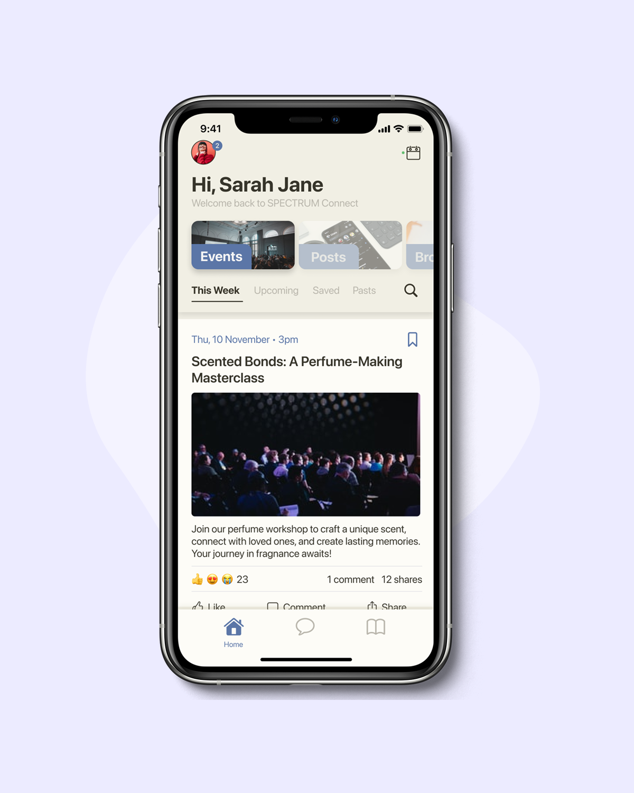
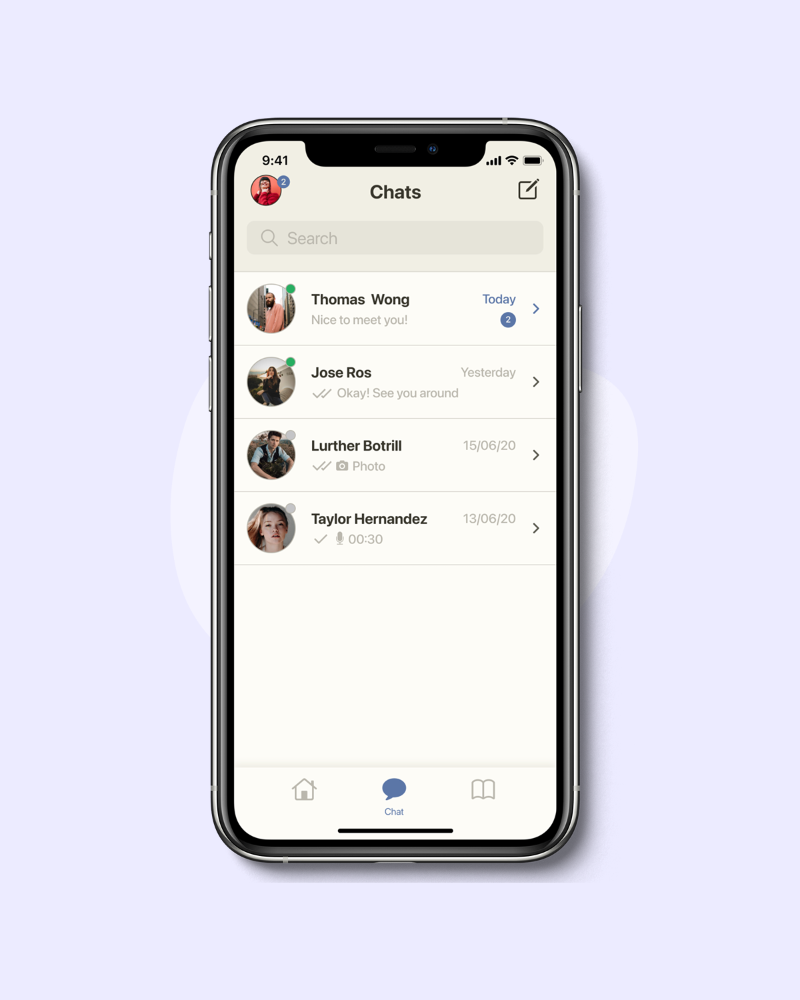
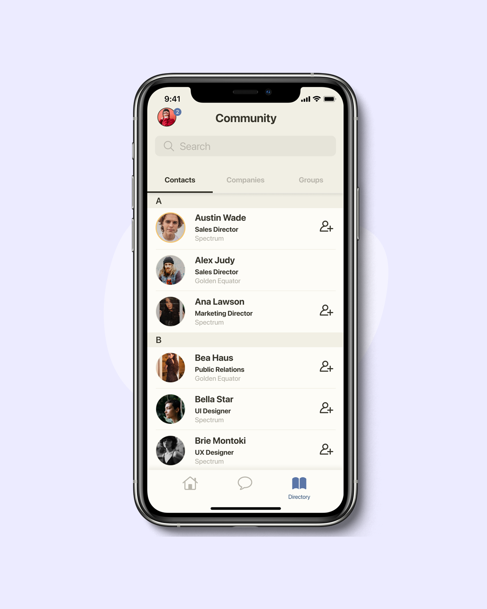
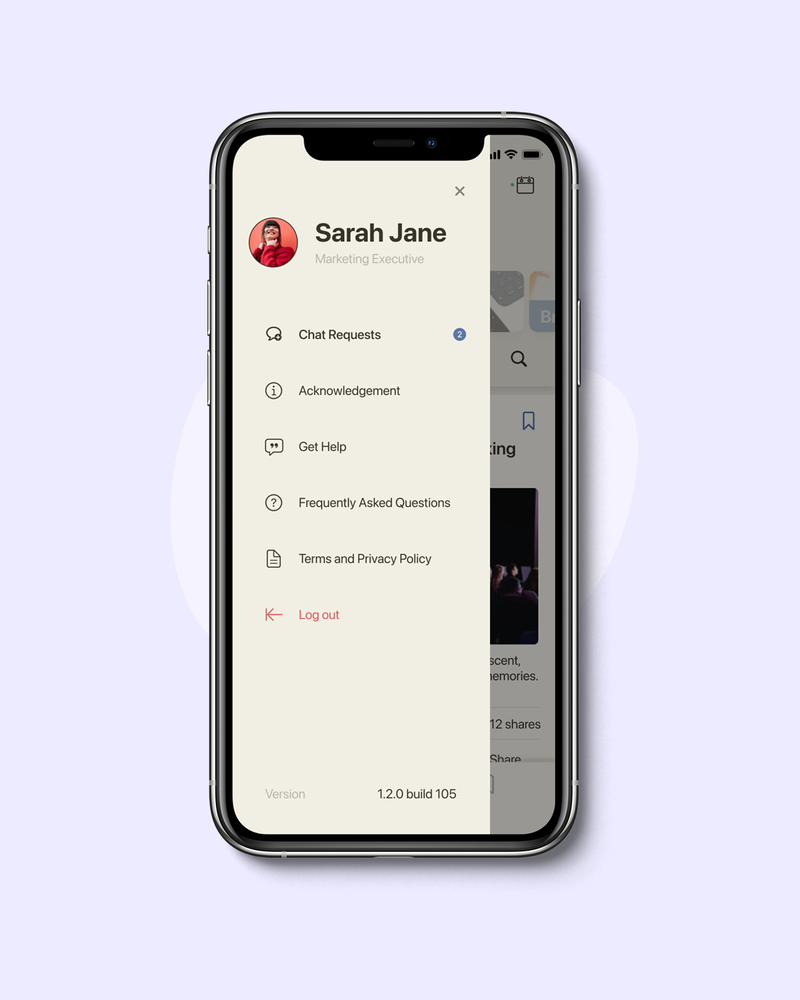
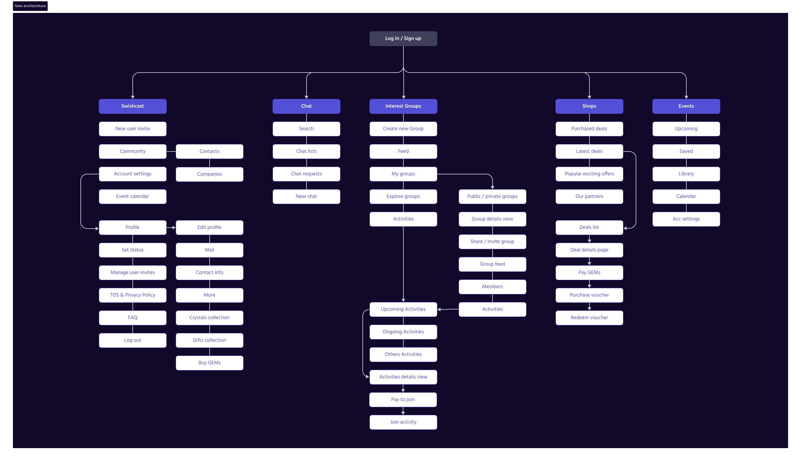
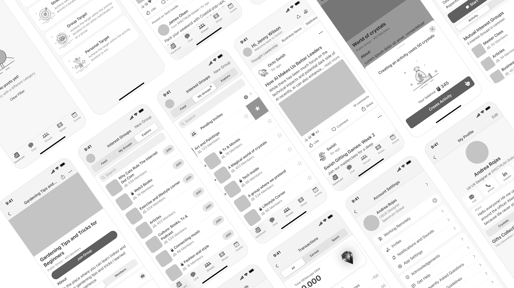
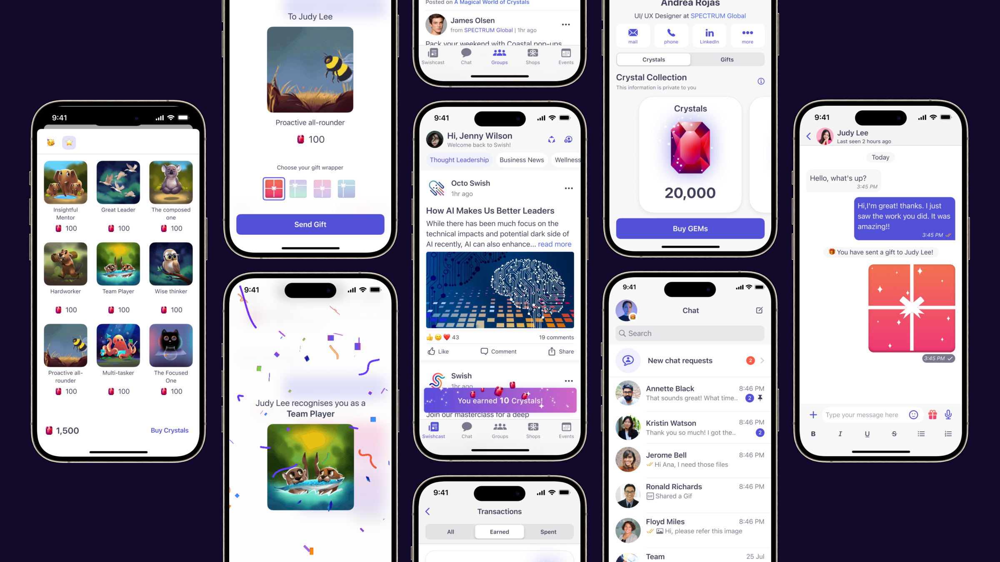
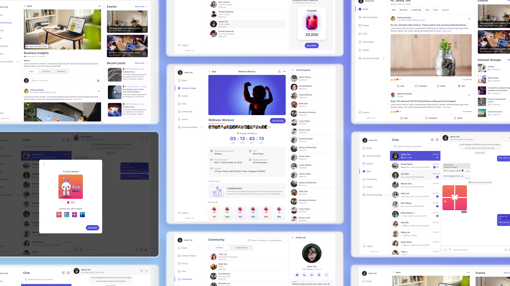

Overview
Swish connects like-minded people through interest-based groups, insights and live events where they learn from thought leaders, collaborating over encrypted chats. Its loyalty layer, GEMs, is a currency businesses use to unlock rewards.
The goal is a B2B2C model that improves people's lives at work: an authentic community built for collaboration, learning and trusted connection (a real sense of belonging) backed by a secure tokenisation and monetisation model.
The problem
Swish had a community, but the app made it hard to belong.
Members signed up, looked around once, and drifted. For a product whose whole promise is belonging at work, a cluttered, dated experience wasn't cosmetic. It was existential: weak engagement put the entire B2B2C model at risk.
"It's a bit of a hassle to find the interest groups when you open the app." Interview participant
What we saw
No identity of its own
It borrowed Clubhouse's UI wholesale; nothing looked or felt like Swish.
Poorly structured IA
Content wasn't logically grouped, so people couldn't find what they came for.
Dated, clunky UI
An outdated, hard-to-use interface that felt like a chore, not a community.
Little to come back for
Thin on engaging content, so there was no reason to return.
Ineffective onboarding
New members weren't guided to value, and bounced before the "aha".
Inconsistent navigation
Tab names, icons and patterns shifted between sections; nothing felt learnable.
My role & process
As the product designer on the revamp, I owned the work end to end, starting with a hard look at what wasn't working, then rebuilding both the structure and the brand. My contribution spanned four fronts:
UX audit
Pulled the live app apart to find where members lost their way, across IA, navigation, onboarding and content.
Rebranded the app
Gave Swish an identity of its own, replacing the borrowed Clubhouse look with a brand that felt like the community it served.
Built a design system
Created reusable components, type and colour so every screen felt consistent, and the team could ship faster.
Introduced a monetisation model
Designed a tokenised economy (GEMs) and virtual gifts, turning everyday engagement into revenue without eroding trust.
UX audit
We audited Swish's four key surfaces (Home, Chat, Community and Profile) against what members actually arrive to do, looking for where the borrowed, cluttered interface got in their way.

01 · Home
Home felt overwhelming, not welcoming
Logged-in members landed on Events and a hard-to-read tab bar, while Broadcast (the feature that helps newcomers learn the app) stayed hidden.
- Events greets new members before they understand the app
- Tabs don't read as tabs; disabled text is barely legible
- Broadcast, the best onboarding hook, is buried out of sight
- Layout lacks the clear, intuitive navigation members expect

02 · Chat
Chat felt unsafe and unfinished
The chat list missed the basics members expect from a messaging tool (feedback, control, privacy and safety), undermining trust in a community built on conversation.
- No delivery receipts or typing indicators to confirm messages land
- Sent messages can't be edited or deleted after sending
- Conversations aren't encrypted, leaving private chats exposed
- No way to block or report unwanted contacts

03 · Community
Interest groups were buried in a directory
The Community tab behaved like a people directory, hiding the interest groups members came for behind a weak search and unclear labels.
- Search is clumsy and returns inaccurate, irrelevant results
- Interest groups sit buried beneath a generic "Community" label
- Tab names and icons are unclear and visually dull

04 · Profile
Profile mixed account settings with everything else
Profile bundled unrelated features into account settings, so members couldn't find what belonged there, and met chat controls where they didn't expect them.
- Account settings hold items unrelated to the account
- Chat Requests sits here instead of within Chat
- Settings lack logical grouping, clear headings and labels
The solution
Weighing interview feedback against the business goals, I shaped a revamp that serves members and the business at once: keeping what worked, sharpening what didn't, and adding what was missing. It came down to three moves:
A monetisation model
Launch a loyalty programme with GEMs: users earn them for actions, buy them in-store, and redeem them at shops for rewards, opening the door to new features.
Stronger engagement
Sharpen the UX with richer interest groups and fuller chat for a more connected, engaging experience.
Virtual gifts
Let coworkers show appreciation: send e-gifts via chat and interest groups, spending GEMs and boosting engagement.
New information architecture
With those priorities set, the structure came first. The new IA organises everything around five clear tabs (Swishcast, Chat, Interest Groups, Shops and Events), putting the community and its activities front and centre, and finally giving GEMs, gifts and deals a proper home.

Wireframes
From there, hi-fi wireframes worked out the core journeys (the Swishcast feed, interest groups and activities, chat, and the GEMs wallet) before any colour went on.

Final UI
Finally, the refreshed UI brings it together: a livelier Swishcast feed, clearer interest groups and chat, a GEMs wallet, and a gifting flow (confetti and all) that lets coworkers recognise each other.

Web app
The experience reaches beyond iOS. I extended the system into a responsive web app so members can pick up Swish on a larger canvas, browsing interest groups, catching up on Swishcast and managing their GEMs from the desktop.

Outcome
"With our new visual branding and user experience in place, the new Swish clearly captures the essence of our current and target customer base, our employees, and our values." Dafna Sokol · CTO, Golden Equator
Conclusion
Modernising Swish across every platform addressed the core usability issues head-on and lifted the overall experience. By simplifying the interface and streamlining key workflows, the revamp made the app more efficient and more enjoyable to use. The gains in engagement, satisfaction and new-user growth underline how much user-centred design drives real business results.